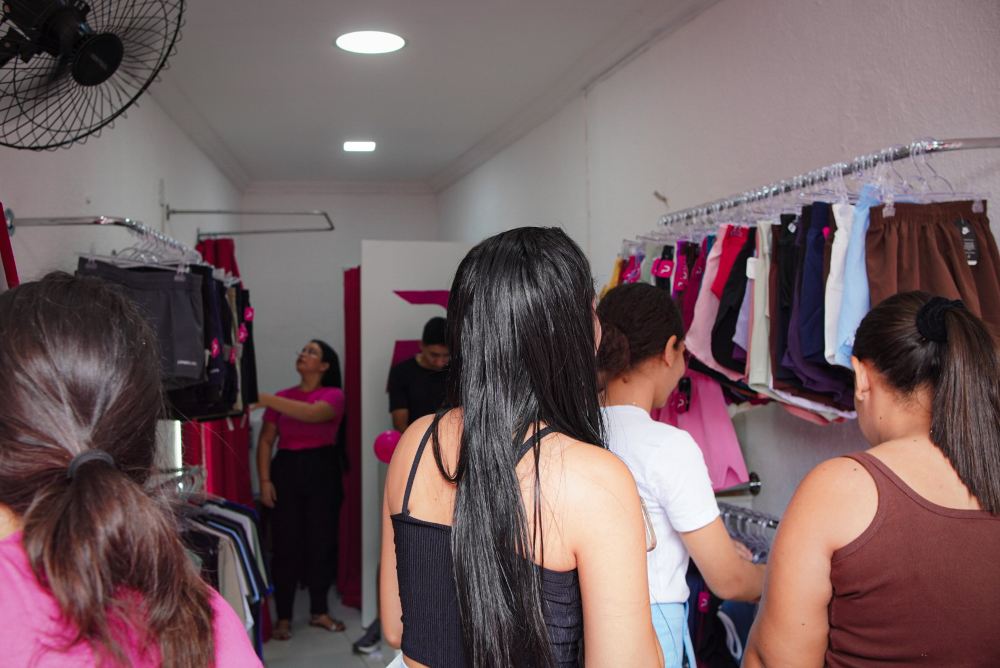

Bem-vindo!

A Pink Moda Fitness nasceu para inspirar confiança, estilo e performance. Somos uma marca dedicada a mulheres que vivem com atitude, determinação e amor-próprio — dentro e fora da academia. Unimos conforto, qualidade e tendência em cada peça, desenvolvendo roupas fitness que valorizam o corpo, acompanham seus movimentos e elevam sua autoestima. Aqui, você encontra looks modernos, versáteis e pensados para proporcionar liberdade e segurança em todos os momentos do seu treino. Na Pink Moda Fitness, acreditamos que se sentir bem é o primeiro passo para conquistar qualquer objetivo. Vista sua melhor versão. Treine com estilo. Brilhe com Pink.
- Leggings de alta compressão – Modelam o corpo, oferecem sustentação e garantem segurança durante os treinos.
- Tops e Croppeds – Confortáveis, estilosos e com excelente suporte.
- Shorts e Bermudas – Liberdade de movimento com caimento perfeito.
- Conjuntos exclusivos – Looks completos que unem praticidade e elegância.
- Peças casuais fitness – Para você continuar estilosa também fora da academia.
Na Pink Moda Fitness, nosso maior objetivo é simples: fazer você se sentir confiante, poderosa e pronta para conquistar qualquer meta. Queremos ir além da moda fitness. Nosso propósito é elevar a autoestima, incentivar um estilo de vida ativo e mostrar que cada mulher é forte do seu jeito. Trabalhamos para oferecer peças que unem qualidade, conforto e tendência, ajudando você a treinar com segurança e sair se sentindo ainda mais incrível. Nosso objetivo é crescer junto com você — acompanhando suas evoluções, suas conquistas e cada passo da sua jornada.
A Pink Moda Fitness está localizada na Rua Boanerges Jacó, próximo à Naturale, em um ponto de fácil acesso para você vir nos visitar com tranquilidade.
Aqui você encontra as melhores roupas para suas atividades físicas, com estilo e conforto.